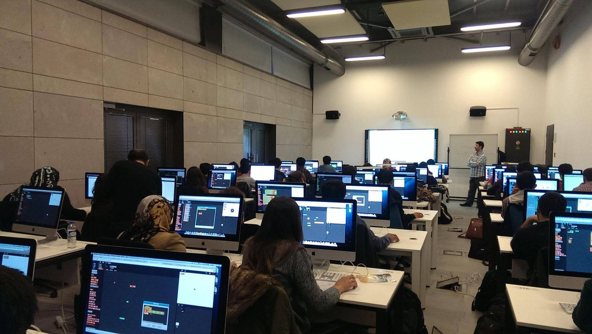
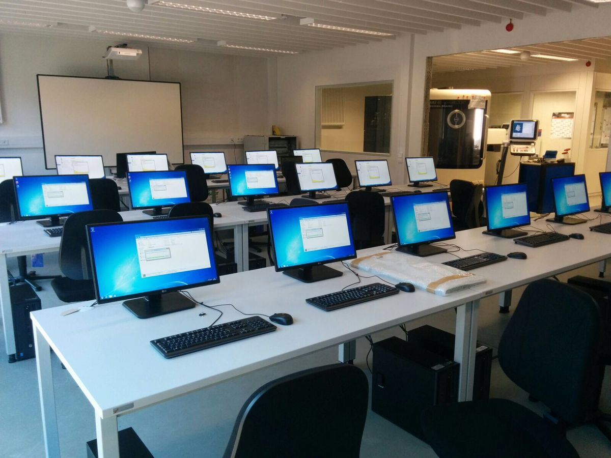
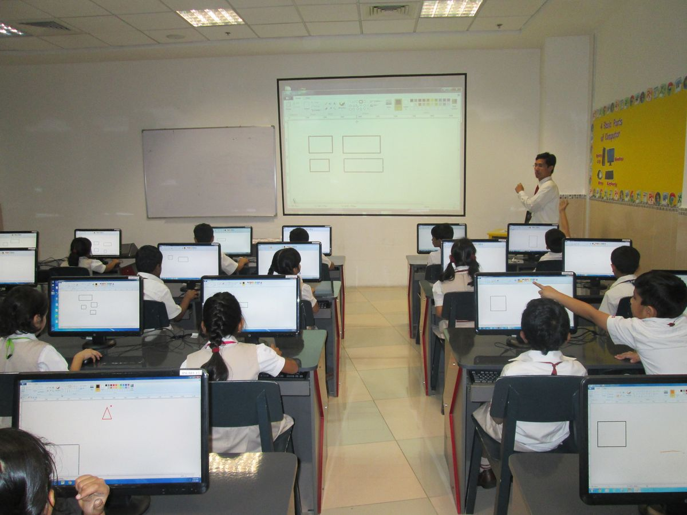
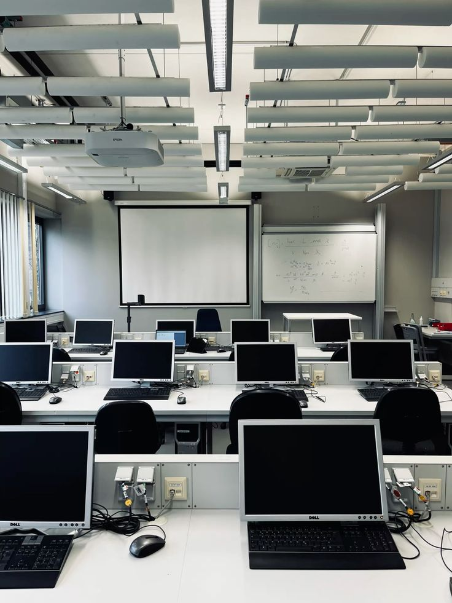

Praktikum Desain Web merupakan mata kuliah praktik yang membahas tentang cara membuat website mulai dari struktur HTML, styling menggunakan CSS, hingga membuat tampilan yang rapi dan menarik. Praktikum ini ditujukan bagi mahasiswa semester awal yang ingin mendalami dunia pengembangan web.
Selama satu semester, praktikan akan mengerjakan berbagai latihan mulai dari membuat halaman sederhana, menyusun tabel, mengatur warna dan jarak, sampai menggabungkan gambar ke dalam halaman web.
Setelah mengikuti praktikum ini, mahasiswa diharapkan mampu:
| No | Tujuan | Keterangan |
|---|---|---|
| 1 | Memahami struktur HTML | Mengenal tag dasar dan fungsinya |
| 2 | Menguasai CSS dasar | Warna, padding, margin, border |
| 3 | Menyusun tabel | Termasuk colspan dan rowspan |
| 4 | Menampilkan gambar | Menggunakan tag img |
| 5 | Membuat link | Menghubungkan ke halaman lain |
Jadwal praktikum dibagi menjadi tiga sesi setiap minggunya:
| No | Waktu | Materi | Ruang | |
|---|---|---|---|---|
| Hari | Jam | |||
| 1 | Senin | 08.00 - 10.00 | Pengenalan HTML | Lab Komputer 1 |
| 2 | Rabu | 10.00 - 12.00 | CSS Dasar | Lab Komputer 2 |
| 3 | Jumat | 13.00 - 15.00 | Layout Sederhana | Lab Komputer 1 |
Berikut rincian materi yang akan dipelajari setiap pertemuan:
| Pertemuan | Topik | Sub Topik | Latihan |
|---|---|---|---|
| 1 | HTML Dasar | Tag h1, h2, p | Membuat profil diri |
| Tag a dan img | Menambahkan link dan gambar | ||
| 2 | CSS Dasar | Warna dan font | Mewarnai halaman |
| Padding dan margin | Mengatur jarak elemen | ||
| 3 | Tabel | colspan dan rowspan | Membuat jadwal kuliah |
Berikut beberapa dokumentasi kegiatan praktikum:



Berikut link yang bisa digunakan untuk belajar mandiri:
W3Schools - Tutorial HTML & CSS
MDN Web Docs - Referensi Lengkap
CSS-Tricks - Tips dan Trik CSS
freeCodeCamp - Latihan Interaktif
Codecademy - Kursus Online
Untuk informasi lebih lanjut, silakan hubungi:
| Informasi Kontak | |
|---|---|
| Nama Laboratorium | Lab NCS |
| labit@univpancasila.ac.id | |
| Telepon | 021-1234567 |
| Jam Operasional | Senin - Jumat, 08.00 - 16.00 |